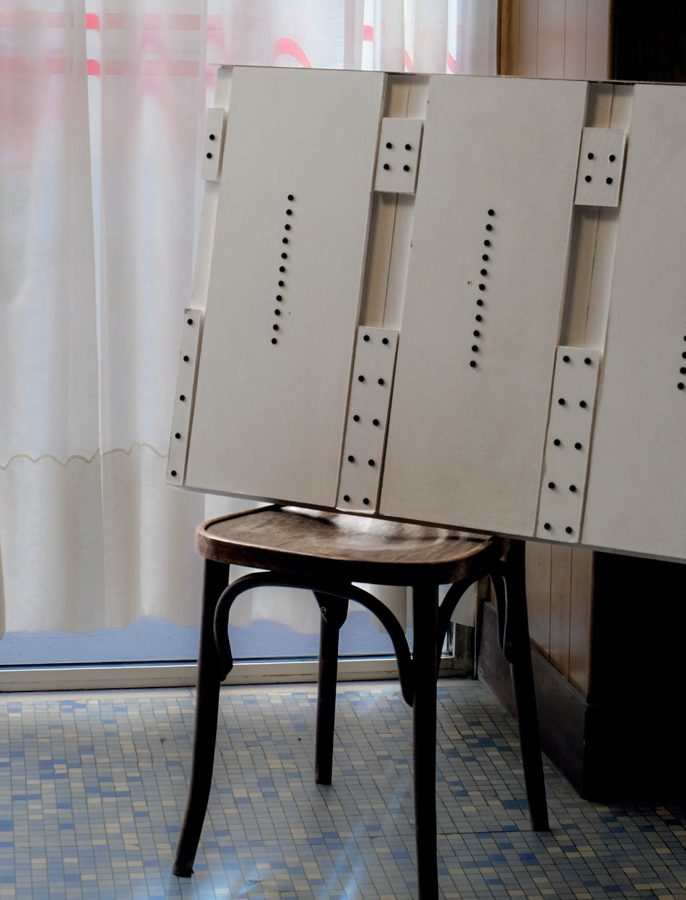

SOUBASSEMENT · LE PROJET DES FONDATRICES
Domino
Des dalles de faux plafond en plâtre détournées en parement mural. Par la répétition d’un élément standardisé et reproductible à l’infini, ce soubassement interroge aussi la place de l’ornement dans le design du réemploi.
Lola Amas & Bertille Ducorps — @lola.amas · @bertilleducorps
Designers et architectes d’intérieur, co-fondatrices du Collectif Échos.